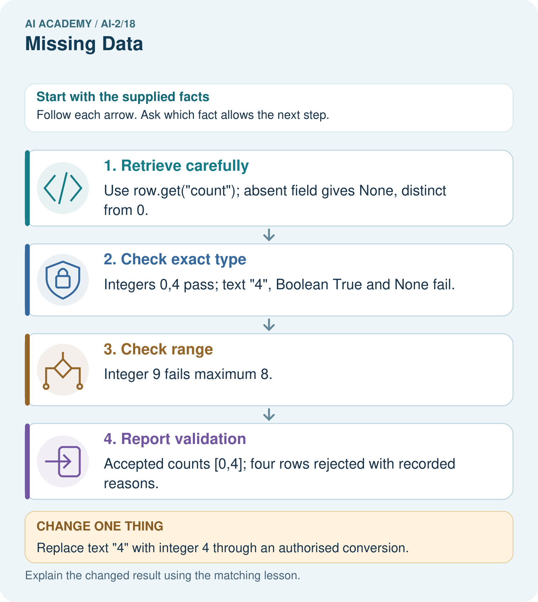

AI Academy · Level 2 · Grade 7 · Week 18 · Workbook
Missing Data
Learn to understand, design, build, test and explain AI systems responsibly.
Project: Transparent Book Recommender
Workbook · 1 of 20
Recall and choose your starting point
Try the recall before opening notes. Then use a different colour or a labelled second line to correct your explanation.
Noise and Outliers
Without opening the old lesson, explain one key idea from Noise and Outliers. Give an example and a mistake that the idea helps you avoid.
Choose Informative Questions
Without opening the old lesson, explain one key idea from Choose Informative Questions. Give an example and a mistake that the idea helps you avoid.
Accuracy as a Fraction
Without opening the old lesson, explain one key idea from Accuracy as a Fraction. Give an example and a mistake that the idea helps you avoid.
Workbook · 2 of 20
Practise with fading help
Use W2: Trace filtering for Missing values and validation. Record the answer once; the lesson and workbook refer to the same attempt.
| Given inputs | Procedure I chose | Middle steps | Result and check |
|---|---|---|---|
Workbook · 3 of 20
Individual reasoning check
Use the worked case for Missing values and validation. Proposed explanation: “A successful run proves the conclusion”. Decide whether this explanation is supported. Point to the step or supplied fact that decides; explain your repair if needed.
Workbook · 4 of 20
Independent transfer case
Independent case: Validate independently
Write a filter for count values that must be integers from 0 to 10. Process {count: 3}, {}, {count: 0}, {count: 11}, {count: "3"}, using quoted keys in Python. Report accepted values and rejected count.
Attempt this case before feedback. Record any help. Earlier examples below are further practice; a case already practised with feedback cannot establish fresh transfer.
Workbook · 5 of 20
Your learning target
Scores award 2 for preferred genre and 1 for short length. A book matches genre but page count is missing. Compare rejecting it, assigning zero length points and asking for pages.
Workbook · 6 of 20
Solve the given case
Genre is known, but page count is missing and length affects recommendation score.
Choose transparent handling.
Show your trace, calculation or evidence
Workbook · 7 of 20
Check a changed case
A book's page count is blank. Is blank the same as zero? Give an honest way for a short-book recommender to respond.
My independent answer and reason
Week 18 Test and reflect
Workbook · 8 of 20
Design a revealing test
Create a changed input, boundary case or missing-information case. Write the expected answer or safe response before testing.
| Test record | My evidence |
|---|---|
| Changed input or condition | |
| Expected answer or fallback | |
| Observed result | |
| Why the result occurred |
Workbook · 9 of 20
Project checkpoint
Use ‘no preference’ only when the reader confirms it; otherwise ask or explain uncertainty.
The project change and evidence I will keep
Workbook · 10 of 20
Self check
I can explain the mechanism. I can show evidence. I can handle a changed case. I can name a limit. Mark each as not yet, with help or independently, and attach supporting work.
Teacher review ____________________ Next step ____________________
Workbook · 11 of 20
Transfer practice from the original programme
Scores award 2 for preferred genre and 1 for short length. A book matches genre but page count is missing. Compare rejecting it, assigning zero length points and asking for pages.
Record support used: none, hint or teacher explanation.
Workbook · 12 of 20
W1 Distinguish zero and unknown
Explain the difference between {"minutes": 0}, {} and {"minutes": None}.
Workbook · 13 of 20
W2 Trace filtering
Predict accepted values and rejections for minutes 4, 0, 61 and "4".
Workbook · 14 of 20
W3 Repair a condition
A program uses if value to accept durations. Give a counterexample and the correct rule.
Workbook · 15 of 20
W4 Validate independently
Write a filter for count values that must be integers from 0 to 10. Process {count: 3}, {}, {count: 0}, {count: 11}, {count: "3"}, using quoted keys in Python. Report accepted values and rejected count.
Workbook · 16 of 20
W5 Report the limitation
Only 2 of 5 supplied durations were accepted. Why should the report include this?
Workbook · 17 of 20
Feedback, return check and learning record
| Evidence | My record |
|---|---|
| Worked alone / hint / model | |
| First step I repaired and why | |
| New case checked later; date and result | |
| What I can now explain without notes | |
| One remaining question |
Revisit this idea with your teacher after a delay. Familiarity is different from explaining and using it on a changed case.
Workbook · 18 of 20
Pictorial case practice: Missing Data
A fictional catalogue records counts of available copies under a strict input contract.
Accept count only if type(value) is int and 0<=value<=8. Missing fields are invalid, and Booleans are not counts.
Rows have count 0, count 4, absent count, count "4", count True and count 9.

Why is the Boolean True rejected even though arithmetic can treat it like 1 in Python?
Support used: alone / hint / worked example. This record is practice evidence.
Project connection: Validate recommender stock and numeric features explicitly, recording zero stock as measured zero rather than missing.
Workbook · 19 of 20
Project portfolio milestone
Project: Transparent Book Recommender
Current milestone: Test changed cases. Keep normal, boundary and failure cases; compare expected and observed results.
Validate recommender stock and numeric features explicitly, recording zero stock as measured zero rather than missing.
| Evidence to keep | My record |
|---|---|
| This week’s input and deciding step | |
| Prediction and actual result (or labelled paper trace) | |
| One change since the previous checkpoint and why | |
| One error or limit and the next test |
Workbook · 20 of 20
Supported practice and learning evidence
Use this supported practice once, in the browser or on paper. Keep the reserved independent assessment for a separate first attempt before teacher feedback.
A fictional catalogue records counts of available copies under a strict input contract.
Practice 1: explain the deciding evidence
Which labelled step matches this detail? Accepted counts [0,4]; four rows rejected with recorded reasons.
1. Report validation
2. Retrieve carefully
3. Check range
4. Check exact type
Hint if needed: Read the steps in the pictorial case. Match the supplied detail to the stage that performs or records it.
After your attempt, compare with the supported explanation: Report validation Accepted counts [0,4]; four rows rejected with recorded reasons. Testing if value would wrongly discard zero, which is a real valid count. Python’s isinstance(True,int) is true, so the stated exact-integer contract uses type(value) is int to reject Boolean input. Keep missing, type-invalid and range-invalid reasons separate rather than turning every rejected value into zero.
Practice 2: explain the deciding evidence
Changed-case practice: Replace text "4" with integer 4 through an authorised conversion. Which conclusion is supported by the supplied facts?
1. We can decide the result without examining the changed input or the procedure.
2. This one example guarantees correct results for every future input.
3. Accepted values become [0,4,4]; three rows remain rejected.
Hint if needed: Use the changed condition and the deciding step in the pictorial trace. The answer must say what follows from those facts.
After your attempt, compare with the supported explanation: Accepted values become [0,4,4]; three rows remain rejected. The converted value now satisfies both type and range checks.
Repair a missing building block
Review Noise and Outliers (ai-2/17). Goal: Calculate mean and median. Short practice: If 18 was genuine, which summary better describes the middle observed task, and what extra fact should be shown?. Return to this week and explain what you changed.
Review Choose Informative Questions (ai-2/15). Goal: Fit a root question and leaf predictions from training examples. Short practice: Choose the best original question and explain why its more balanced split matters here.. Return to this week and explain what you changed.
Review Accuracy as a Fraction (ai-2/12). Goal: Explain why overall accuracy can hide failure on a less common class. Short practice: Why is 100% repair detection not sufficient to declare the changed classifier best?. Return to this week and explain what you changed.
Predict, run and debug
The browser lab lets you edit the supported Python examples already included in this lesson. Predict first, run, inspect the actual output or error, change one input, then run again. Keep code, predictions, actual results and a reasoned revision together. On paper, label your result as a trace rather than an execution.
Keep your completed work
Use Download completed work in the hosted lesson to export your answers, reflections, practice feedback and code-run evidence. Open the HTML copy to read or print it. Drafts stay in this browser when storage is available; clear drafts on a shared device.